Japan / Yamaguchi / Sanyoonoda
Sanyoonoda
Sanyoonoda · Yamaguchi
Sanyoonoda
Highlighted on the Yamaguchi map.
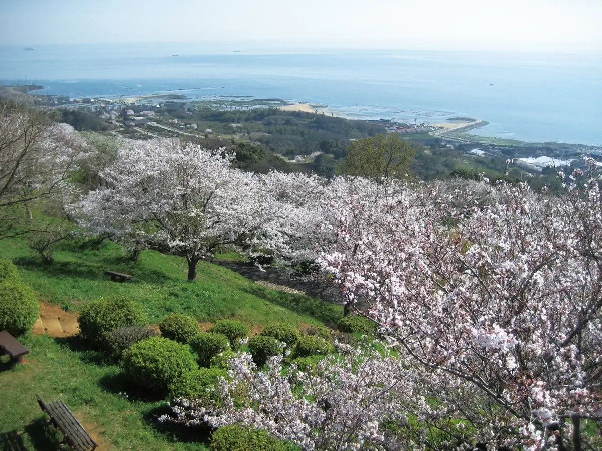
Dining
ドライブインみちしお
Doraibuin Michishio
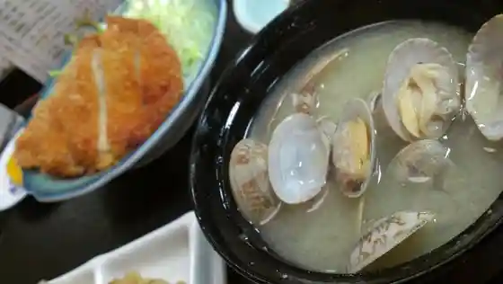
ラーメン加藤
Raamen Katou
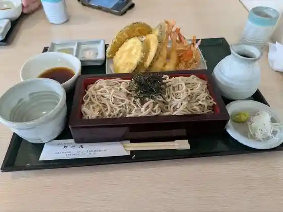
手打そば 野の花
Teuchi Soba No No Hana
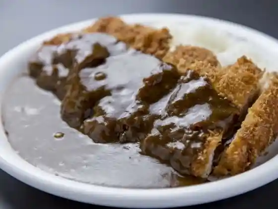
カレー屋ロック
Karee Ya Rokku
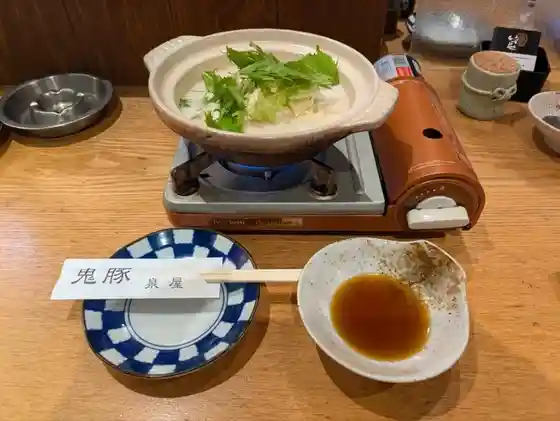
泉屋 厚狭本店
Sen'oku Asa Honten
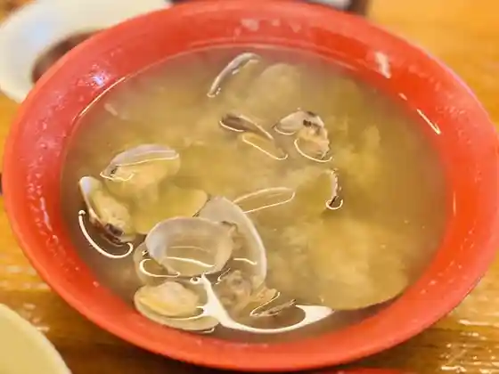
ドライブイン南国
Doraibuin Nangoku
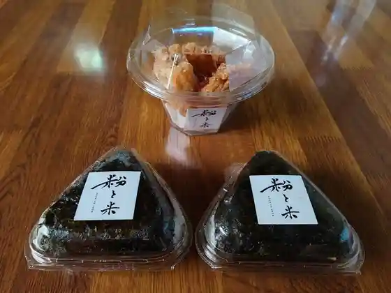
粉と米
Kona To Kome
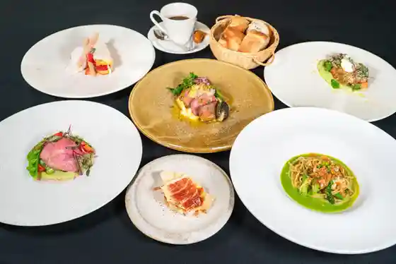
ソル・ポニエンテ
ソル・ポニエンテ
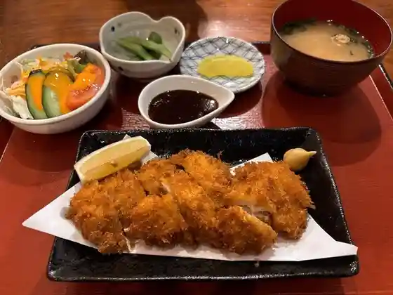
一二三味処
Hifumi Ajidokoro
割烹御食事処 みちしお
Kappou Mike Koto Tokoro Michishio
若新
Jaku Shin
ラーメン龍
Raamen Ryuu
どんどん アルク小野田店
Dondon Aruku Onoda Mise
中華そば 一久 小野田バイパス店
Chuuka Soba Kazuhisa Onoda Baipasu Mise
浜のてんぷら屋
Hama Notenpura Ya
鰻料理 たけだ
Unagi Ryouri Takeda
Bakery B-load.
Bakery B-load.
トロアメゾン 本店
Toroamezon Honten
食道楽 帆万里
Shokudo Raku Ho Banri
エクストールイン 山陽小野田厚狭駅前
Ekusutooruin Sanyouonoda Asa Ekimae
ちいさなパン焼工房 BLANC
Chiisana Pan Yaki Koubou Blanc
飛寅
Hi Tora
Heart Bread ANTIQUE おのだサンパーク店
Heart Bread ANTIQUE
パン・デ・モルデ
パン・デ・モルデ
居魚屋 鱗
Kyo Sakanaya Uroko
お酒と馳走 灯
O Sake To Chisou Tomoshibi
すずめ
Suzume
どんどん おのだサンパーク店
Dondon Onoda Sanpaaku Mise
台湾料理 福来順
Taiwan Ryouri Fukurai Jun
極みの食パン 安都佐
Kiwami No Shoku Pan An Miyako Sa
ティーゲベック
Teiigebekku
石窯パン工房 須恵の郷 小野田店
Ishigama Pan Koubou Sue No Sato Onoda Mise
Regal
Regal
山陽国際ゴルフクラブレストラン
Sanyou Kokusai Gorufukuraburesutoran
おこのみ焼やまなか
Okonomi Yaki Yamanaka
とんかつ勝六
Tonkatsu Katsuroku
うどんの庄 住吉
Udonno Shou Sumiyoshi
七福屋 埴生店
Shichi Fukuya Hanyuu Mise
花の海
Hana No Umi
Legit
Legit
もりなが松陰堂
Morinaga Shouin Dou
灯
Tomoshibi
萬盛 埴生店
Man Jou Hanyuu Mise
ふるさとホルモン
Furusato Horumon
NIKUのcafe-bar AJITO
NIKUcafe-bar AJITO
レストラン&カフェ ポテト
Resutoran & Kafe Poteto
麺菜酒家らいち 厚狭店
Men Na Shuka Raichi Asa Mise
一久 小野田港店
Kazuhisa Onoda Minato Mise
ラ ティエラ
Ra Teiera
象石
Zou Ishi
汁なし担担麺 階杉 おのだサンパーク店
Shiru Nashi Tantan Men Kai Sugi Onoda Sanpaaku Mise
ローズガーデン
Roozugaaden
いたりあん食堂
Itarian Shokudo
ナチュラルグリーンパークホテル
Nachuraruguriinpaakuhoteru
ASA Station Hotel
ASA Station Hotel
中国料理 敦煌 山口小野田店
Chuugokuryouri Tonkou Yamaguchi Onoda Mise
シャプラ
Shapura
らいおん亭
Raion Tei
うどんのウエストリバア
Udonno Uesutoribaa
伊酒屋 ぼーの
I Sakaya Boono
パティスリー グランシャリオ
Pateisurii Guranshario
金来順
Kin Rai Jun
二井観光ぶどう園
Nii Kankou Budou Sono
お好み焼 かわ本 小野田店
O Konomi Yaki Kawa Hon Onoda Mise
みち草
Michi Kusa
厚狭ゴルフ倶楽部
Asa Gorufu Kurabu
福満聚
Fukumitsu Ju
Tummy
Tummy
まんぷく亭
Manpuku Tei
二反田 旅館
Nitanda Ryokan
じゅうじゅう焼肉 カルビ大陸 小野田店
Juujuu Yakiniku Karubi Tairiku Onoda Mise
ル ココン 料理工房
Ru Kokon Ryouri Koubou
パーク.イン山陽小野田
Paaku . In Sanyouonoda
海の家 はら
Uminoie Hara
はた満
Hata Man
DAJIN
DAJIN
酒場ビッグ
Sakaba Biggu
蔵間
Kura Kan
Hanamusubi
Hanamusubi
さつまいも
Satsumaimo
ベーカリー 来夢
Beekarii Raimu
入船
Irifune
居酒屋 丸富士
Izakaya Maru Fuji
goofy929
goofy929
BAR TEACHER
BAR TEACHER
炭火焼 とりとり
Sumibi Yaki Toritori
カフェ ソル・ポニエンテ
カフェ ソル・ポニエンテ
Tea TaiL
Tea TaiL
セントラルホテル
Sentoraruhoteru
村上旅館
Murakami Ryokan
駅うどん 日の出屋
Eki Udon Hinode Ya
コメコメバーガー 山陽小野田店
Komekomebaagaa Sanyouonoda Mise
ハグハグカフェ
Haguhagukafe
焼肉サラン
Yakiniku Saran
拝啓陳者
Haikei Chin Mono
隙間珈琲
Sukima Koohii
デザート
Dezaato
呑々
Don (kurikaesi)
佐々木書店 ブックカフェ
Sasaki Shoten Bukkukafe
居酒屋 ひと息
Izakaya Hito Iki
劇場型居酒屋 厚狭やきとりスタンド
Gekijou Kata Izakaya Asa Yakitori Sutando
焼鳥 とも
Yakitori Tomo
旬菜樹
Jun Na Ki
とんかつ 泉屋
Tonkatsu Sen'oku
なおじ 山口小野田店
Naoji Yamaguchi Onoda Mise
憩いの場 厚狭駅前店
Ikoi No Ba Asa Ekimae Mise
コッチ
Kotchi
春駒亭
Harugoma Tei
カレーとコーヒー ファイン
Karee To Koohii Fain
夢紅カフェ
Yume Kurenai Kafe
海門
Kaimon
うどん ちび
Udon Chibi
cafe miche-t
cafe miche-t
プレジデントカントリー倶楽部山陽
Purejidentokantorii Kurabu Sanyou
ジェラテリアバール SAKURA
Jierateriabaaru Sakura
スターバックス・コーヒー おのだサンパーク店
スターバックス・コーヒー おのだサンパーク店
田頭茶舗 サンパークおのだ店
Tagashira Chaho Sanpaaku Onoda Mise
とろ麦 おのだサンパーク店
Toro Mugi Onoda Sanpaaku Mise
サブウェイ おのだサンパーク店
Sabuuei Onoda Sanpaaku Mise
コメダ珈琲店 小野田バイパス店
Komeda Koohii Mise Onoda Baipasu Mise
サンマルクカフェ おのだサンパーク店
Sanmarukukafe Onoda Sanpaaku Mise
長崎ちゃんめん 山口小野田店
Nagasaki Chanmen Yamaguchi Onoda Mise
廣石
Hiroishi
ワカヤマ
Wakayama
長州屋 小野田店
Choushuu Ya Onoda Mise
麺屋淳一
Men Ya Jun'ichi
JAZZ割烹 大津屋
JAZZ
三つ舎
Mittsu Sha
火毱
Hi
寿司よし
Sushi Yoshi
さくら亭
Sakura Tei
二反田
Nitanda
社会福祉協議会 山陽オートレース場 食堂
Shakaifukushi Kyougikai Sanyou Ootoreesu Ba Shokudo
えいじ庵
Eiji Iori
ファミリーマート 埴生インター店
Famiriimaato Hanyuu Intaa Mise
朝陽カントリークラブレストラン
Asahi Kantoriikuraburesutoran
minatsuki
minatsuki
呑々本店
Don (kurikaesi) Honten
三代目 龍馬
Sandaime Ryouma
大石園茶舗
Ooishi Sono Chaho
龍王園
Ryuuou Sono
七輪焼肉 銀のホルモン
Shichirin Yakiniku Gin No Horumon
来来亭 小野田バイパス店
Rairai Tei Onoda Baipasu Mise
吉野家 山陽小野田店
Yoshinoya Sanyouonoda Mise
ジョイフル 山口厚狭店
Joifuru Yamaguchi Asa Mise
ミスタードーナツ サンパークおのだショップ
Misutaadoonatsu Sanpaaku Onoda Shoppu
広島つけ麺 八丁堀
Hiroshima Tsuke Men Hatchoubori
一心亭
Isshin Tei
ぢどりやかっちゃん
Jidoriyakatchan
串ん坊
Kushi N Bou
ダイニング ハラヤ
Dainingu Haraya
久世福商店 おのだサンパーク店
Kuze Fuku Shouten Onoda Sanpaaku Mise
竹まる
Take Maru
フードウェイ おのだサンパーク店
Fuudouei Onoda Sanpaaku Mise
甲比丹
Kapitan
Linda
Linda
山陽グリーンゴルフコース
Sanyou Guriingorufukoosu
酒と旬菜 TonBo
TonBo
Buono
Buono
笑来
Warai Rai
ハローズ 小野田店
Haroozu Onoda Mise
千夜
Senya
長崎ちゃんめん 山口厚狭店
Nagasaki Chanmen Yamaguchi Asa Mise
ポポラマーマ おのだサンパーク店
Poporamaama Onoda Sanpaaku Mise
果汁工房果琳 おのだサンパーク店
Kajuu Koubou Ka Rin Onoda Sanpaaku Mise
牛角 小野田店
Gyuukaku Onoda Mise
八剣伝 小野田駅前店
Yatsurugi Den Onoda Ekimae Mise
ジョイフル 小野田店
Joifuru Onoda Mise
十六雑穀オムライス＆ドリア専門店 おむらいす亭 山口おのだサンパーク店
Juuroku Zakkoku Omuraisu & Doria Senmonten Omuraisu Tei Yamaguchi Onoda Sanpaaku Mise
永山酒造
Nagayama Shuzou
GODIVA おのだサンパーク店
Godiva Onoda Sanpaaku Mise
ジョイフル 小野田中川店
Joifuru Onoda Nakagawa Mise
マクドナルド おのだサンパーク店
Makudonarudo Onoda Sanpaaku Mise
ケンタッキーフライドチキン 山陽小野田店
Kentakkiifuraidochikin Sanyouonoda Mise
フランソワ一閑 小野田店
Furansowa Ikkan Onoda Mise
ペッパーランチ おのだサンパーク店
Peppaaranchi Onoda Sanpaaku Mise
サーティワンアイスクリーム おのだサンパーク店
Saateiwan'aisukuriimu Onoda Sanpaaku Mise
餃子の福原
Gyouza No Fukuhara
松屋 松のや 山陽小野田店
Matsuya Matsu Noya Sanyouonoda Mise
マスターズカフェ ナチュラルグリーンパークホテル店
Masutaazukafe Nachuraruguriinpaakuhoteru Mise
annie 小野田店
annie
ジョリーパスタ 山陽小野田店
Joriipasuta Sanyouonoda Mise
めんた サンパークおのだ
Menta Sanpaaku Onoda
果子乃季 厚狭店
Kashi No Ki Asa Mise
高泊
Taka Haku
ふるさと
Furusato
KAZUN
KAZUN
ジュピター おのだサンパーク店
Jupitaa Onoda Sanpaaku Mise
肴屋さん 酒酒
Sakanaya San Sake Sake
セブンイレブン 小野田萩森口店
Sebun'irebun Onoda Hagimori Kuchi Mise
マックスバリュ 厚狭店
Makkusubaryu Asa Mise
酒喰処 あかり
Sake Shoku Tokoro Akari
ほっともっと 小野田バイパス店
Hottomotto Onoda Baipasu Mise
ほっともっと 厚狭店
Hottomotto Asa Mise
山口ワイナリー
Yamaguchi Wainarii
お食事処 辰
O Shokuji Tokoro Tatsu
みちしお仲みち売店
Michishio Naka Michi Baiten
焼きたてパン ｆｒａｎｐａｎ
franpan
カレーと音楽のお店TRIP
Karee To Ongaku Noo Mise Trip
ファミリーマート 山陽小野田新生一丁目店
Famiriimaato Sanyouonoda Shinsei Itchoume Mise
マクドナルド 小野田店
Makudonarudo Onoda Mise
ホルモン勝龍
Horumon Shouryuu
ブルプル おのだサンパーク店
Burupuru Onoda Sanpaaku Mise
大ぼけ小ぼけ
Ooboke Shou Boke
茶囲夢
Cha I Yume
スパイラルズカフェアンドグッズモンペリエ
Supairaruzukafeandoguzzumonperie
牛遊
Ushi Yuu
桜子
Sakurako
LAWSON 厚狭駅前店
LAWSON
山口労災病院 売店
Yamaguchi Rousai Byouin Baiten
うどん居酒屋 貴
Udon Izakaya Takashi
セブンイレブン キヨスクJR厚狭駅店
Sebun'irebun Kiyosuku Jr Asa Eki Mise
和語飲処 まる家
Wago In Tokoro Maru Ie
LAWSON 山陽小野田埴生店
LAWSON
天然温泉みちしお 休憩スペース
Tennen Onsen Michishio Kyuukei Supeesu
セブンイレブン 山口厚狭本町
Sebun'irebun Yamaguchi Asa Honchou
居座ッ食 あき
Kyo Za Tsu Shoku Aki
ostぶちdell
ostdell
897cafe
897cafe
あや
Aya
ぽんの時間
Ponno Jikan
めん六や 山口小野田店
Men Roku Ya Yamaguchi Onoda Mise
HARU HARUキンパ
HARU HARU
マックスバリュ 小野田店
Makkusubaryu Onoda Mise
生餃子専門店 らいち
Nama Gyouza Senmonten Raichi
ビストロ アマービレ
Bisutoro Amaabire
ウエスタまるき 神田店
Uesuta Maruki Kanda Mise
無印良品 おのだサンパーク
Mujirushiryouhin Onoda Sanpaaku
ゆめマート 南小野田店
Yume Maato Minami Onoda Mise
冨丸
Tomi Maru
汐湯井上旅館
Shio Yui Ue Ryokan
丸久 高千帆店
Marukyuu Taka Chiho Mise
まごころ弁当 小野田店
Magokoro Bentou Onoda Mise
二鶴寿し
Ni Tsuruju Shi
豆狸
Mamedanuki
べにはな
Benihana
おしゃべりたいむ
Oshaberitaimu
手作り惣菜 味彩
Tezukuri Souzai Aji Sai
SNACK YAP
SNACK YAP
辰五郎寿司
Tatsugorou Sushi
お食事工房キッチン
O Shokuji Koubou Kitchin
カウンター炉端 一番星
Kauntaa Robata Ichiban Hoshi
カラオケ喫茶あすか
Karaoke Kissa Asuka
まるよし食堂
Maruyoshi Shokudo
伊藤肉店
Itou Niku Mise
アーリーバーズ
Aariibaazu
定食屋 古粋
Teishokuya Ko Sui
とろろ居酒屋 八丁堀
Tororo Izakaya Hatchoubori
小野田オリエンタルホテル
Onoda Orientaruhoteru
日だまり
Nichi Damari
マァール
Maaaru
RETRO LIFE BAR
RETRO LIFE BAR
串焼居酒屋 キンブタ
Kushiyaki Izakaya Kinbuta
STRIKE
STRIKE
鉄橋荘
Tekkyou Sou
510くれーぷ
510 Kureepu
セブンイレブン 山陽小野田丸河内店
Sebun'irebun Sanyouonoda Maru Kawauchi Mise
成ゆCafe
Cafe
居酒屋ふぁいなるあんさー
Izakaya Fainaruansaa
しお
Shio
Nanairo Yasai Ichigu No Sato
Nanairo Yasai Ichigu No Sato
Sol Poniente
Sol Poniente
Zouseki
Zouseki
Izumiya Asa Main Store
Izumiya Asa Main Store
Wakashin
Wakashin
Teigebekku
Teigebekku
Eijian
Eijian
Chinese Noodle Sampei
Chinese Noodle Sampei
Curry Ya Rock
Curry Ya Rock
La Tierra
La Tierra
Roku No Ya Onoda
Roku No Ya Onoda
Sumiyoshi Udon
Sumiyoshi Udon
Tatsu Sushi
Tatsu Sushi
Ramen Ryu
Ramen Ryu
Musashi Onoda
Musashi Onoda
Mensai Shuya Raichi
Mensai Shuya Raichi
Toko Yamaguchi Onoda
Toko Yamaguchi Onoda
Tajimaya Onoda
Tajimaya Onoda
Kurama
Kurama
Coco Don
Coco Don
Starbucks Coffee Onoda Sunpark
Starbucks Coffee Onoda Sunpark
Subway Onoda Sun Park
Subway Onoda Sun Park
Ramen Godaime Yutaka
Ramen Godaime Yutaka
Ramen Shop Onoda
Ramen Shop Onoda
Trois Maison
Trois Maison
Dumplings Chuka Sakaba Tora No Ko
Dumplings Chuka Sakaba Tora No Ko
Popolamama Onoda Sunpark
Popolamama Onoda Sunpark
Joyfull
Joyfull
Yamatoya
Yamatoya
Gohan to Tororo Toromugi
Gohan to Tororo Toromugi
Ramen Kato
Ramen Kato
Joyfull
Joyfull
Drive In Nangoku
Drive In Nangoku
Restaurant Yakeno
Restaurant Yakeno
Dosankoonoda
Dosankoonoda
Gyukakuonoda
Gyukakuonoda
Kineya Onoda Sun Park
Kineya Onoda Sun Park
Seiyo Sosakuryori Bonheur
Seiyo Sosakuryori Bonheur
West River
West River
Calvi Tairikul Onoda
Calvi Tairikul Onoda
Konamonya Tenten
Konamonya Tenten
Mamekichi
Mamekichi
Honks Ku Indian Restaurant Shapla
Honks Ku Indian Restaurant Shapla
Chukasoba Bypass
Chukasoba Bypass
Ramen Iccho Onoda
Ramen Iccho Onoda
Hakkenden Onoda Ekimae
Hakkenden Onoda Ekimae
Ikkyuonoda Minato
Ikkyuonoda Minato
Rose Garden
Rose Garden
Restaurant Moga
Restaurant Moga
Benten Ramen
Benten Ramen
Hiyoko
Hiyoko
Kunembo
Kunembo
Ryuoen
Ryuoen
Cafe Plaire
Cafe Plaire
Joyfull
Joyfull
Sansan Dining Hall Onoda
Sansan Dining Hall Onoda
Myung Dong Ya Food Courtonoda
Myung Dong Ya Food Courtonoda
Ebisu
Ebisu
Cafe Coco
Cafe Coco
Utagoe Kissa Magokoro
Utagoe Kissa Magokoro
Tecchan
Tecchan
Cafe Azami
Cafe Azami
Katsu Shokudo
Katsu Shokudo
Shokuraku En
Shokuraku En
Pepper Lunch Onoda Sunpark
Pepper Lunch Onoda Sunpark
Saboten
Saboten
Ajiichi
Ajiichi
Sekishu Udon
Sekishu Udon
Pepper Lunch Onoda Sun Park
Pepper Lunch Onoda Sun Park
Panda
Panda
Dondon
Dondon
Pony
Pony
Murasaki Onoda Branch
Murasaki Onoda Branch
Harukomatei
Harukomatei
Yakiniku Nandaimon
Yakiniku Nandaimon
Mampukutei
Mampukutei
Makanaiya Ota
Makanaiya Ota
Good Coffee 27
Good Coffee 27
President Country Club Sanyo Restaurant
President Country Club Sanyo Restaurant
Kodama Drive In
Kodama Drive In
Tokyo University of Science Yamaguchi No 1 Dining Hall
Tokyo University of Science Yamaguchi No 1 Dining Hall
Rakushoku Sabo Wakuwaku An
Rakushoku Sabo Wakuwaku An
Chaimu
Chaimu
Akkonoron
Akkonoron
Fuji Restaurant Snack
Fuji Restaurant Snack
Karaoke Cafe Asuka
Karaoke Cafe Asuka
Elise
Elise
Curry Ya Mami
Curry Ya Mami
Machinoeki Kushiyama
Machinoeki Kushiyama
Mikami Shokudo
Mikami Shokudo
Miyanoryo
Miyanoryo
Yumeya
Yumeya
Omuraisutei Yamaguchi Onoda Sun Park
Omuraisutei Yamaguchi Onoda Sun Park
Ochacha
Ochacha
Sato
Sato
Ikko En
Ikko En
Haikara Dorionoda Main Store
Haikara Dorionoda Main Store
Frigo
Frigo
DESSERT
DESSERT
Roppongi Shokudo
Roppongi Shokudo
K Chan
K Chan
Koala
Koala
Otsuya Honten Annex
Otsuya Honten Annex
Tobuhino
Tobuhino
Sushi Kappo Shiosai
Sushi Kappo Shiosai
Bore Karaoke Cafe
Bore Karaoke Cafe
Taru2
Taru2
Tagosaku
Tagosaku
Nonta Kushiage Dining
Nonta Kushiage Dining
Dommaru Onoda
Dommaru Onoda
Japanese Hanamura
Japanese Hanamura
Ryu Chan
Ryu Chan
Lounge Coco
Lounge Coco
Rouge
Rouge
Kishotei Asa Eki
Kishotei Asa Eki
Hotto Motto Onoda Bypass
Hotto Motto Onoda Bypass
Yakiniku Kotobukien
Yakiniku Kotobukien
Lounge Camelia
Lounge Camelia
Choinomi Shin
Choinomi Shin
Shushokuya Shoki
Shushokuya Shoki
Izasshoku Aki
Izasshoku Aki
Izakaya Kamehachi
Izakaya Kamehachi
Maki
Maki
Life s Cafe
Life s Cafe
Kinbuta
Kinbuta
Shunsaitatsuki
Shunsaitatsuki
Clair
Clair
Takadomari
Takadomari
Dining Haraya
Dining Haraya
Purupan
Purupan
Osakanayasan Shushu
Osakanayasan Shushu
Croquette Dininig Room
Croquette Dininig Room
Purupan
Purupan
Early Birds
Early Birds
Stay
パークイン山陽小野田
Paakuin Sanyouonoda
小野田セントラルホテル
Onoda Sentoraruhoteru
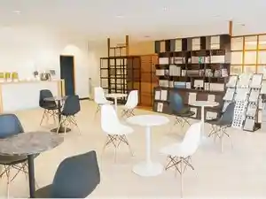
ナチュラルグリーンパークホテル
Nachuraruguriinpaakuhoteru
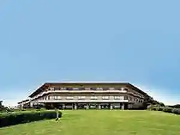
エクストールイン山陽小野田厚狭駅前
Ekusutooruin Sanyouonoda Asa Ekimae
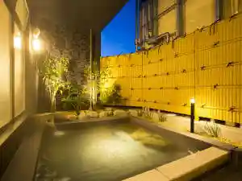
Tabist 厚狭ステーションホテル
Tabist Asa Suteeshonhoteru
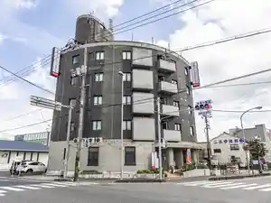
Sights
Hana no Umi
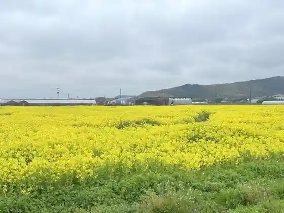
Doraibuin Michishio (Tennen Onsen Michishio)
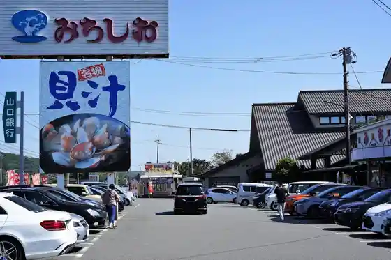
Honzan Misaki Park
Yakeno Coast Kirara Beach Yakeno
Garasu Seisaku Experience (Kirara Garasu Mirai Kan)
Kochi Zu Wo Katate Nimachiwo Aruko U (Asa Hen)
Ko Shio Park
Ryuo Yama Park
Nojo Taiken Mankitsu Tour (Hana no Umi)
Nanayume Adobencha Kibo no Suisho to Nanatsu no Machi no Monogatari
Wainarii Kengaku (Nagayama Shuzo Gomeigaisha)
Ko Shio Onsen
Ryuo Sanko Sono Oto Campground
Wakayama Park
Onodasemento Yamate Kurabu
Izumi Shikibu no Haka
Seian Tera
Kyu Onodasemento Seizo Tate Kama
Sanyoonoda Folk History Museum
Iwasaki Tera
Monomi Yama General Park
Kame Kaki
(Sekai Nihitotsu) Dake no Hanpu Kaban
Nawa Chigahana Park
Suo Nada Kantaku Iseki Taka Haku Kai Saku Hama Go Tei to Hi
Tsuka no Kawa Burial Mound
Hora Gen Tera
Tan no Nobori Kama
Ko Shio Mizumi
Rai Shima Matabe Tanjokinen Hi
Asa Mori Ie Hakasho
Sanyoonoda Katari Bu no Kai
Niiho no Ue Burial Mound
Enno Tera
Shikon no Matsubara
Sembayashi Ama no Daikyu Shigetsu Ishidatami Michi
Maehara Issei Kyutaku Ato
Nagamitsu Terayama Burial Mound
Ryuo Taiko